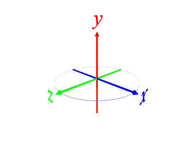
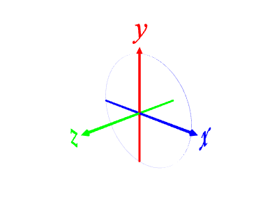
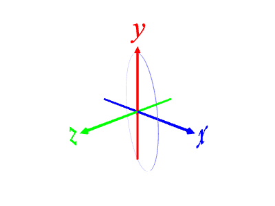
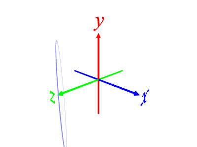
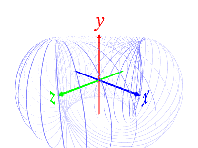

[1] 円環 (正100角形) を作る。
polygon 100 1 -0.01 # 正 100 角形, 外接円半径 1, 厚さ 0.01 (マイナスは側面のみの指定)

[2] 円環を回転する。
r 90 0 0 # x 軸に沿って 90°回転
※ 回転角度は, 座標軸ラベルから原点の方向から見て左回りが正。

r 0 -30 0 # y 軸に沿って -30°回転

[3] 円環を移動する。
t 0 0 1 # z 軸方向に 1 移動する

[4] 円環を複数回回転する。
r 0 10 0 36 # y 軸周りに 10°回転を 36 回繰り返す
